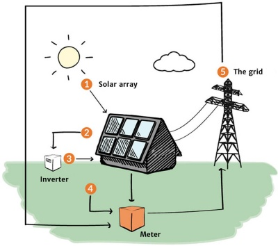

Solar Energy
Solar energy is energy provided by the Sun in the form of solar radiation. Every day the Sun radiates, or sends out, an enormous amount of energy. This Radiant energy has powered life on earth for millions of years and is one of the most important source of energy for life forms. Solar energy is a renewable resource and it is becoming increasingly common that this energy is converted and used as an alternative to fossil fuels. Many technologies can harvest it directly to produce solar electricity for use in homes and businesses globally.
Solar radiant energy
Solar Radiant or light energy is produced in the Sun as a result of nuclear fusion reactions and is transmitted to the earth through space by electromagnetic radiation in quanta or packets of energy called photons. This light energy can be utilised by a process called photovoltaic, which produces electricity directly (Photo meaning light and voltaic relating to electricity). This process is being used more and more as the technology is developed and becomes more economic. It is used widely in solar powered calculators and other devices.
Solar thermal energy
Solar Thermal or heat energy is used widely in Australia for heating water for our domestic use in Solar Water heaters. This is an excellent and economic energy solution as, by using the Sun's heat for making our hot water, we cut down on the amount of fossil fuels needed tobe burnt to supply electricity to do the same thing. The technology is now developing which will use solar thermal energy to produce steam at high enough temperatures and pressures to drive steam turbines for electricity generations.
Solar Photovoltaic (PV)
The Sun's light energy can be converted directly into electricity in a single process using Photovoltaic (PV) cells, otherwise known as solar cells. A PV cell is a thin plate of light sensitive material made primarily of silicon, the second most abundant element in the earth 's crust, and the same semiconductor material used for computers.
When the silicon is combined with one or more other materials, it exhibits unique electrical properties in the presence of sunlight. Electrons are agitated by the light and move through the silicon. This is known as the photovoltaic effect and results in direct current (DC) electricity.
How Does Solar Power Work?
- The Sun's light is absorbed by the solar panels.
- The silicon and conductors in the panel convert the light into Direct Current (DC) electricity, which then flows into the inverter.
- The inverter converts the DC into Alternate Current (AC) electricity, which is used in your home.
- Any additional electricity that's not used by your home goes via your home's meter into the mains power grid for others to use.
- Electricity is drawn from the grid when you need more power than your solar energy system produces.
